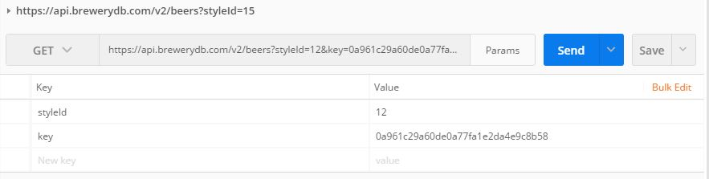
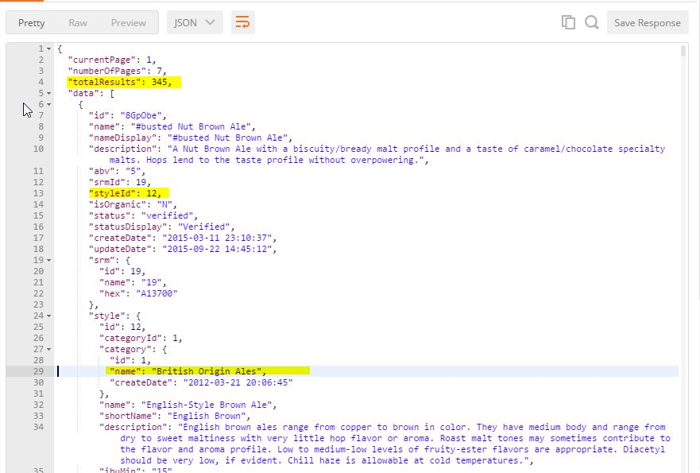
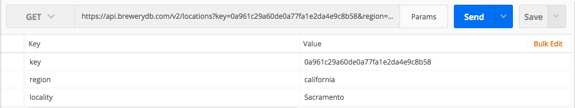
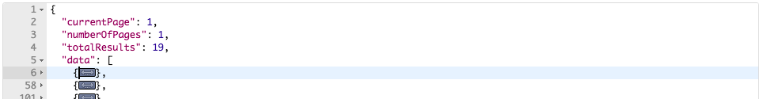
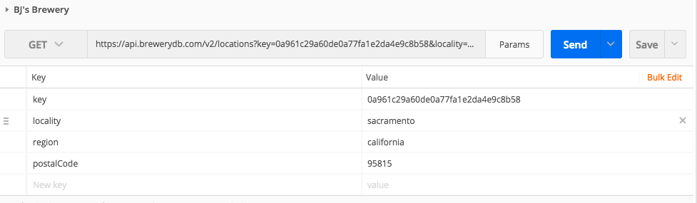
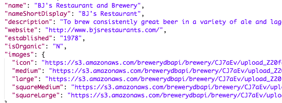

Displaying the Results
The Fun Part
Now that we have constructed our first GET request, lets see how to render it.
At first glance, you might ask yourself, hey, there is an https in front of this, why not just throw it into my browser and see that outputs? Should you decide to do so, this is that you shall see:

Try Reading That!
What is shown above is what is known as the "raw" JSON response.
Thankfully, as JSON is exceedingly popular these days, there are several ways to render and preview your response. While constructing this How-To-Guide, I had to learn to navigate the BrewersDB. I used a myriad of utilities to examine GET responses, including raw, rendering them within HTML/DOM model and what I found most useful to preview my responses was a utility called Postman.
Using Postman
Luckily, we have a utility we can use to both enter GET requests and render the results in a very user friendly manor. While there are several available, Postman is a favorite among developers.
Its very simple to use. You merely enter the base URL and the category you are accessing on the API ( in this case, Style ). Then you add the parameters(styleID and Key). Hit "Send" and you will get a response ( see below ).
Response using postman
Notice above that you get a return of nearly 345 Beers with the style ID that is "British Origin Ales". Who would have thought there were that many beers in existence with just one style?!?
Now, we will execute another GET request that will narrow our search results to a more manageable list.
Searching for Beers available at certain locations based on user inputted criteria, such as geographical filtering
Below is how you would tailor the GET request to return results based on a particular regional area.
In this example, I used I picked Sacramento for the locality and California for the region. Notice that the region is not case sensitive. This will result in a return of nineteen locations(see below).
Narrowing It To Just One....
Adding just one more parameter in the key, my zip code, will give me a list of the nearest locations to enjoy beer. Lets see how much smaller this list will get.
I added one more attribute to the above request, postalCode and set it to 95815 (my zip-code). Below is the result
Postman is a great tool for displaying results of API requests. However, developers use it as a tool to help work with an API.
In the next section, we will look at how to use JavaScript with the BrewersDB.
Click below to continue...
Continue